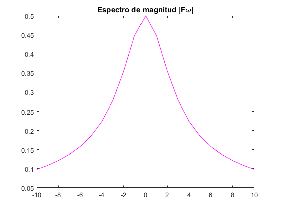

Práctica 3: SEÑALES CONTINUAS
Contents
Primer actividad
Crea una función que se llame fun1 y reciba dos parametros y la función debe regresar el resultado , reporta la grafica vs en el intervalo para
fun1.m
function F=fun1(a,w) F=a/(a^2)+(w.^2); end
% w=-2:2; % valores de $\omega$ % a=1; % F=fun1(a,w); %llamamos a la función y asignamos valor a los parámetros % % % plot(w,fun1(a,w),'r') %graficamos la función % title('Gráfica de la señal F(\omega)=a/(a^2+\omega^2) ')
Segunda actividad.
Para la función reporta la gráfica de de , en el espectro de magnitud y el espectro de fase en (puedes consultar con help la descripción de abs y angle)
syms t %subplot(2,1,2), figure ezplot(heaviside(t)*exp(-2*t), [-2, 5]) axis ([0 5 0 1]); % t=-2:5; % f = inline('exp(-2*t)*heaviside(t)','t'); % subplot(2,1,2),plot(t,f(t)) title('Gráfica de la señal f(t)=e^{-2t}u(t)') w = -10:10; b = 2; X = (1)./(b+j*w); %subplot(2,2,2), figure plot(w,abs(X),'m'); % plot magnitude of X title('Espectro de magnitud |F\omega|') %subplot(2,2,1), figure plot(w,angle(X)*180/pi,'g'); % plot angle of X in deg. title('Espectro de fase |F\omega|')
Tercera activdad.
Realiza las mismas operaciones que Lathi en las secciones M1.1 a M1.4 al final del capítulo 1 y antes de la sección de probelmas
M1.1
%%Nueva funcion %primero fue: y ahora: %t = (-2:2); t = (-2:0.01:2); f = inline('exp(-t).*cos(2*pi*t)','t'); figure plot(t,f(t)) title('Gráfica de la señal f(t)=exp(-t)cos(2\pit)')
M1.2
t = (-2:0.01:2); u = inline('(t>=0)','t'); plot (t,u(t)); xlim([-2 2]); ylim([-0.1 1.1]); p = inline('(t>=0) & (t<1)','t'); t = (-1:0.01:2); plot(t,p(t)); xlabel('t'); ylabel('p(t) = u(t)-u(t-1)'); axis ([-1 2 -.1 1.1]);
M1.3
g = inline('exp(-t).*cos(2*pi*t).*(t>=0)','t') t = (-2:0.01:2); plot(t,g(2*t+1)); xlabel('t'); ylabel('g(2t+1)')'; grid; plot(t,g(-t+1)); xlabel('t'); ylabel('g(-t+1)')'; grid; plot(t,g(2*t+1) +g(-t+1)); xlabel('t'); ylabel('h(t)')'; grid;
g =
Inline function:
g(t) = exp(-t).*cos(2*pi*t).*(t>=0)
M1.4
x = inline('exp(-t).*((t>=0)&(t<1))','t'); t = (0:0.01:1); E_x =sum(x(t).*x(t)*0.01) x_squared = inline('exp(-2*t).*((t>=0)&(t>1))','t'); E_x = quad(x_squared,0,1) g_squared = inline('exp(-2*t).*(cos(2*pi*t).*^2).*(t>=0)','t');
E_x =
0.4367
E_x =
0
Cuarta actividad.
Resuelve el problema 1.2.1 usando las herramientas del paso anterior. Para la señal mostrada en negro, graficar las siguientes funciones.
- x(-t)
- x(t+6)
- x(3t)
- x(t/2)
f= inline('(t<6).*(0)+((t>=6)&(t<=12)).*(t-6)','t'); x = inline('(t<6).*(0)+((t>=6)&(t<=12)).*(t-6)+((t>12)&(t<=15)).*(-t+12)+((t>15)&(t<=24)).*(-t+15)','t'); t=0:24; plot(t,-f(t)) %axis ([0 24] [-1 0.5]);
Quinta actividad.
Ejecuta las instrucciones de código simbólico para encontrar la tranformada de Fourier de
syms t w syms a f=exp(-a*t)*heaviside(t); fourier(f,t,w)
ans = - (sign(real(a))/2 - 1/2)*fourier(exp(-a*t), t, w) + 1/(a + w*1i)